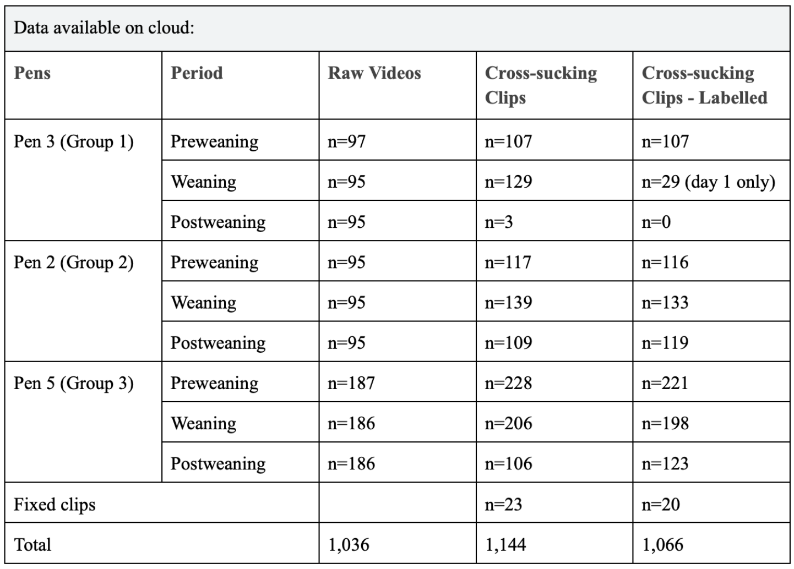
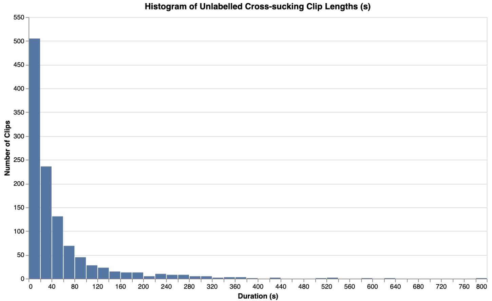
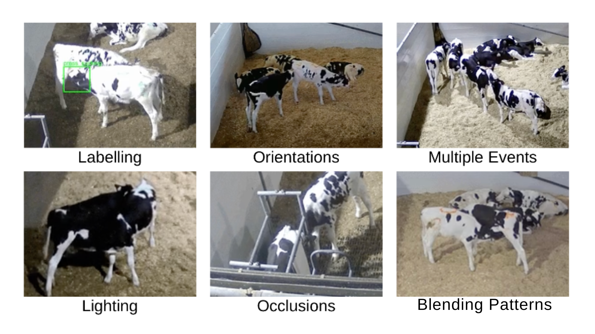
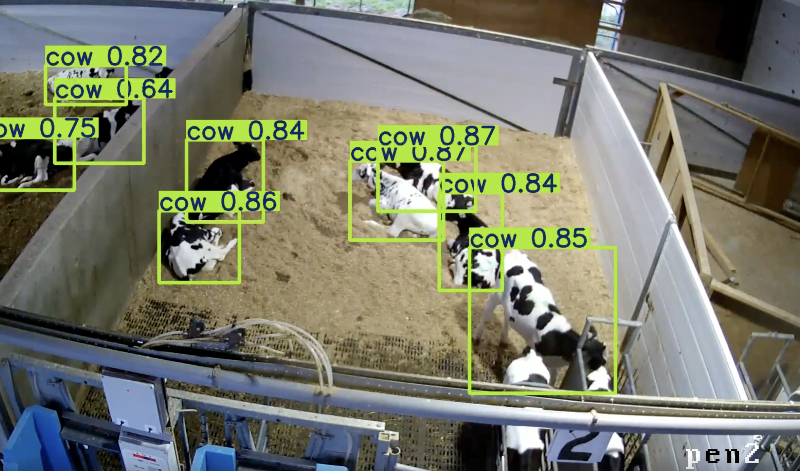
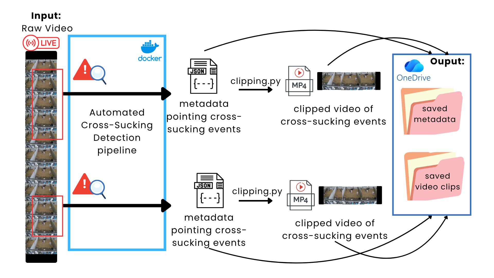
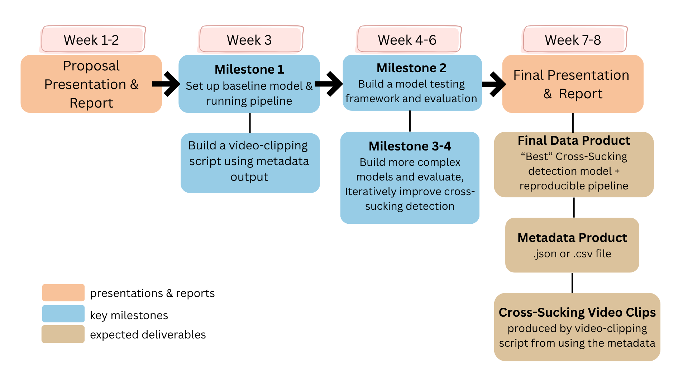

MooVision: Project Proposal
Executive Summary
Dairy calves are typically separated from their mothers shortly after birth. Efforts to improve calf welfare through social housing are often limited by farmers’ concerns about economic consequences resulting from physical injury, disease, and compromised milk production associated with cross-sucking. Studying this behaviour remains challenging because current methods rely on manual labelling, which is labour-intensive, time-consuming, and difficult to scale. This project aims to apply a computer-vision-based approach to automatically detect and label cross-sucking behaviour in dairy calves, improving scalability and overall efficiency.
Introduction
In modern dairy farms, calves are often separated from their mothers within hours of birth (Mahmoud, Mahmoud, and Ahmed (2016); Wegner et al. (2025)) and housed individually (Gaillard (2014)). Although individual housing may be easier to manage, social housing has been shown to improve calf welfare, including enhanced social cognition, cognitive development, learning ability, and reduced weaning distress (Plaugher and Cantor (2025)). Despite these benefits, many farmers remain reluctant to adopt social housing because of concerns surrounding cross-sucking (Plaugher and Cantor (2025)).
Cross-sucking occurs when one or more calves suck on the body parts of another calf. In this project, however, cross-sucking is defined specifically as sucking directed at the udder area. Because calves are unable to satisfy their natural suckling instinct following mother-calf separation, they often redirect this behaviour toward one another (Wegner et al. (2025)). Cross-sucking can lead to physical injuries, disease transmission, and long-term reductions in future milk production (Mahmoud, Mahmoud, and Ahmed (2016)). As a result, cross-sucking remains a major barrier to the wider adoption of social housing, emphasizing the need for further research to address farmers’ concerns and improve calf welfare.
Currently, the UBC Animal Welfare Program (AWP) relies on manual labelling of extensive calf video recordings to study cross-sucking behaviour. This process is time-consuming, labour-intensive, and subject to inconsistencies between annotators, making it difficult to scale to larger datasets in commercial farming environments. This project aims to develop an affordable, automated system capable of detecting cross-sucking from live video, enabling more efficient, consistent, and scalable analysis of dairy calf behaviour in social housing systems.
Data & Exploratory Data Analysis (EDA)
Data Source (from Sarah Keppler’s description of data collection)
Our dataset consists of raw video footage, including twenty-four-hour recordings of dairy calves in their pens, shorter clips capturing cross-sucking behaviour, and labelled versions of these clips. Each pen is recorded from a single camera at an angled overhead view.
The raw footage was collected from three groups of dairy calves (eight calves per pen) over three consecutive days during each of three observation periods: pre-weaning, weaning, and post-weaning. Throughout these periods, calves were monitored for cross-sucking behaviour.
The recordings were then reviewed manually by undergraduate students, who examined 27 days of footage (3 pens, 3 periods, 3 days each) to identify cross-sucking events and extract them into shorter clips. These clips were subsequently reviewed again, and the cross-sucking behaviours were manually labelled. As expected, this data collection process required several months to complete, highlighting the need for a more efficient approach.
Observational Unit
The observational unit was each video clip extracted from continuous recordings, with each clip containing at least one cross-sucking event. Figure 1 shows a breakdown of these clips.

Figure 2 below shows the length of cross-sucking events based on the duration of clipped videos. From this, we can gather that most cross-sucking events are relatively short, 51s on average, or with a median value of 23.8s. The shortest cross-sucking event is 0.3s, and the longest is 791s (~13mins).

Anticipated Challenges
Based on our dataset, we expect to face several key modelling challenges. Pens are crowded environments, and cross-sucking behaviour frequently occurs in areas where calves or structural beams partially occlude one another, making it difficult to clearly observe key visual features. Additional challenges include varying lighting conditions, labelling inconsistencies, similar coat patterns between calves, multiple cross-sucking events occurring simultaneously, and differing orientations of these behaviours. Together, these conditions make it difficult for the model to accurately detect true cross-sucking events and distinguish them from other interactions.

Temporal modeling introduces an additional layer of complexity due to variations in clip length. Shorter clips may show partial cross-sucking events, providing incomplete behavioural context. Conversely, longer clips require the model to track cross-sucking behaviours over long periods of time, increasing the difficulty of consistent detection. Together these characteristics motivate the need for models able to handle the robust spatial, and temporal challenges present in our data. Figure 3 shows several of these challenges.
Limitations
There is a limited number of pen styles, camera angles, and cows, resulting in the potential of our model failing to generalize well to outside environments. Data is also restricted to video labelled with bounding boxes; there may be alternative approaches that provide better solutions (infrared, skeletal structures, etc.).
Data Science Approach
To prevent data leakage and enable generalization to new environments (such as moving to a new farm), we hold out one full pen or Day 1 of each weaning stage as our test set. Our methodology follows a progressive three-phase structure: establish a working baseline, refine frame-level detection, then introduce temporal reasoning.
Baseline: Proximity-Based Detection with Pre-Trained YOLO
We begin with YOLOv8 pretrained on COCO to detect whole cow bounding boxes, establishing our benchmark detector. We apply a proximity check flagging frames where the bounding box of one calf overlaps with another as a candidate cross-sucking event. To ensure robustness and reduce false positives from transient overlaps, we require that the bounding box overlap must persist across a minimum number of consecutive frames, with threshold set to filter out spurious detections. This temporal persistence constraint effectively filters out spurious detections caused by calves momentarily standing near each other or passing through the same spatial region, while capturing genuine cross-sucking behaviour that occurs over sustained periods.

A key limitation is anatomical imprecision; whole-cow boxes and coarse body part proxies may generate false positives, directly motivating our refined detection methods below.
Refined Frame-Level Detection
To address the domain gap, we will fine-tune on our own annotated pen footage, introducing dedicated mouth and udder classes to make the proximity check anatomically precise. We evaluate three candidate approaches from simplest to most complex:
| Method | Model | How it works |
|---|---|---|
| Fine-tuned object detection | YOLOv7X / YOLOv8 | Re-train baseline weights on our annotated barn footage with mouth and udder classes added; proximity check becomes snout-to-udder rather than head proxy-to-body proxy |
| Frame-level detection + temporal linking | YOLOv8 + Seq-NMS | Detect behaviour bounding boxes per frame independently, then apply a temporal linking algorithm to connect detections across frames into consistent event tubes; maps directly onto our existing annotations |
| Pose estimation + behaviour classification | ViTPose / DeepLabCut | Predict anatomical keypoints per calf — snout, neck, withers, udder; cross-sucking flagged when the snout keypoint of one calf falls within the udder keypoint region of another; most robust to partial occlusion |
Anticipated challenges include class imbalance and annotation cost, since fine-tuning requires sufficient labelled positive frames across all three weaning stages.
Temporal Approaches
With a reliable per-frame signal established, we layer temporal reasoning on top to distinguish sustained sucking events from brief incidental contact. We evaluate three architectures of increasing complexity:
| Method | Model | How it works |
|---|---|---|
| Sequence classification | LSTM / Temporal Convolutional Network | Per-frame bounding box coordinates and proximity scores fed as a time series; model learns which temporal patterns of overlap constitute a real cross-sucking event vs transient noise; most direct extension of the baseline |
| Spatiotemporal action detection | SlowFast / YOWO | Processes short video clips end-to-end as 3D space-time volumes, learning appearance and motion jointly without requiring explicit flow computation; outputs behaviour bounding boxes localised across the clip |
| Transformer-based tube detection | Video Swin / TubeR | Self-attention across spatial and temporal dimensions captures long-range dependencies; outputs spatiotemporal action tubes linked across frames and can reason about occluded regions using surrounding context |
A key challenge across all temporal approaches is that we may not have enough labelled cross-sucking clips to train these models reliably. Our footage is spread across three weaning stages and seven days, which means each stage has relatively few positive examples to learn from. To compensate, we will use data augmentation techniques, artificially generating new training samples by simulating blocked views, randomly shifting clips in time, and adding motion blur, to give the model more variety without collecting additional footage.
Evaluation & Success Criteria
Evaluation Metrics
To evaluate our detection system, we will use metrics across two levels. At the event level, bounding box IoU will be used to measure how precisely predicted boxes overlap with ground truth annotations, while precision, recall, F1, and F2 will assess how well the model classifies cross-sucking versus similar behaviours like grooming or head-butting. We will prioritize F2 over F1 as missing a cross-sucking event is more costly than an occasional false positive. At the sequence level, temporal IoU will measure how accurately the model captures the full duration and timing of each detected event against manually labeled time windows.
Success Criteria
Success for our partner means more than strong metric scores. The system must function as a deployable workflow that accepts continuous raw video and automatically generates labeled clips alongside metadata including confidence scores, pen number, weaning stage, and event duration. This will enable researchers to ask deeper questions such as whether cross-sucking prevalence varies across pens or weaning stages. Success also requires the pipeline to be accessible to non-technical users via Docker, with outputs mirroring the existing CSV annotation structure for immediate integration into current workflows.

See Figure 5 for a high level overview of the system pipeline.
Practical Use & Stakeholders
In practice, results will be used in two ways. For researchers, the system enables large-scale behavioral monitoring across Canadian dairy farms, supporting the first comprehensive risk factor analysis of cross-sucking prevalence and informing best management practices ahead of the 2032 Canadian regulation requiring social housing of dairy calves. For farmers, it provides a practical tool to evaluate whether management changes such as adjusting feeding methods or milk quantities are reducing cross-sucking.
The primary stakeholders are UBC Animal Welfare Program researchers, who require a rigorous and reproducible tool, and Canadian dairy farmers, who need something practical and easy to deploy. Secondary stakeholders include the broader animal
Timeline
The proposed timeline is shown in Figure 6.
